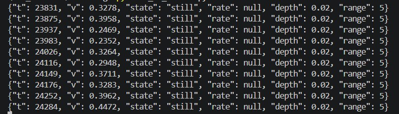

4. State, ademfrequentie en diepte
De ruwe waarde van de riem moest iets worden waar Reachy over kan praten.
vr 30 oktober (voorwerk met Rio) en zo 1 november 2026 (gebouwd)
Voorwerk met Rio (vr 30 okt)
Op vrijdag 30 oktober deed ik onderzoek met Rio. We maakten de Reachy-app kleiner. Als je de simulatiebestanden helemaal downloadt, zitten er heel veel .py-bestanden in en die moesten minder worden.
Daarnaast maakten we samen de eerste versies van models.py en de client voor de ademdata. We begonnen met models.py, waarin we alleen v en t hadden.
from dataclasses import dataclass
@dataclass(frozen=True)
class BreathingData:
t: float
v: float
Later kwamen daar state, rate en depth bij.
Wat ik maakte (zo 1 nov)
De riem geeft alleen een ruwe waarde. Reachy kan daar niets mee, dus ik moest er iets van maken waar hij over kan praten. Dat doet de ESP32 elke seconde, over de laatste ongeveer 30 seconden. Hij rekent drie dingen uit.
- State is inademen, uitademen, pauze of stil.
- rate is het aantal ademhalingen per minuut. Ik tel hoe vaak het signaal omhoog door het gemiddelde gaat.
- depth is een waarde van 0 tot 1, vergeleken met de diepste ademhaling tot nu toe.
Eerst maak ik de ruwe waarde schoon. Ik reken hem om naar -1 tot 1 met een rollend minimum en maximum over 500 metingen, en ik maak hem vloeiender met een gemiddelde dat nieuwe metingen zwaarder telt (EMA, alpha 0,25). De eerste 70 metingen sla ik over.

still en geeft het geen frequentie (rate is null).Probleem. De diepte was altijd ongeveer 2 en “still” werd nooit herkend. Ik berekende de diepte op de genormaliseerde waarde, maar normaliseren rekt het signaal altijd naar dezelfde grootte. Daardoor leek lichte ademhaling net zo diep als diepe.
Oplossing. Ik gebruik nu het ruwe bereik van de riem (maximum min minimum). Onder een minimum bereik van 40 is de state “still”. De diepte is het ruwe bereik gedeeld door het grootste bereik dat ik tot nu toe zag.
Probleem. Aan het begin kreeg ik rare waarden, omdat de eerste metingen extreme minima en maxima gaven.
Oplossing. Ik sla de eerste 70 metingen (ongeveer 3,5 seconde, WARMUP) over.
Probleem. Ik had in de app een apart bestand analysis.py gemaakt. De pulsclient van Rio heeft dat niet.
Oplossing. Ik verplaatste de analyse naar de ESP32. De app ontvangt nu de klare waarden, net als bij de pulssensor.
Wat ik nog niet heb gecontroleerd
- Ik neem aan dat een stijgende waarde inademen is. Dat heb ik nog niet gecontroleerd tegen mijn eigen ademhaling.
- De getallen 40 (minimum bereik) en 300 (referentiebereik) zijn schattingen, geen gemeten waarden.
Wat ik hieruit leer
Een waarde die er goed uitziet, kan toch fout zijn. Ik vroeg me af waar de diepte vandaan kwam en testte met de riem om en niet om. Zo vond ik het eerste probleem.
Bronnen
- Recognizing Physiological and Emotional states with Sensors (Team9 Documentation, van Yusuf en Niek). https://studio.dev.hihva.nl/dark-tech/projects/2026-2027-semester-1/when-robots-know-your-body/research/physiological-state-research/. Dit is een grote documentatie waar alles wordt uitgelegd. Ik pakte alleen wat ik nodig had voor het gemiddelde.